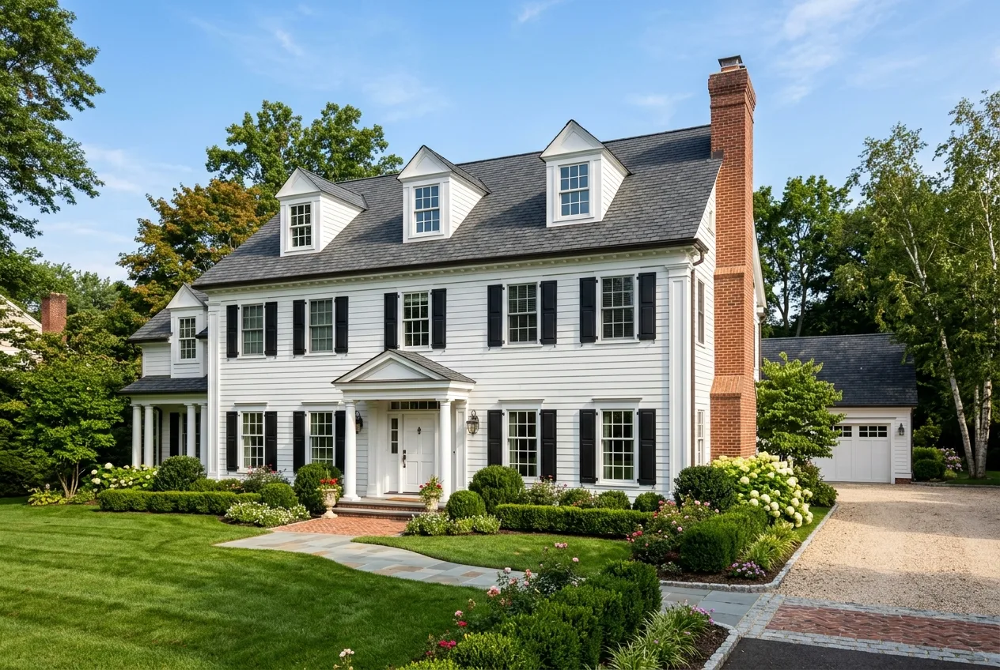
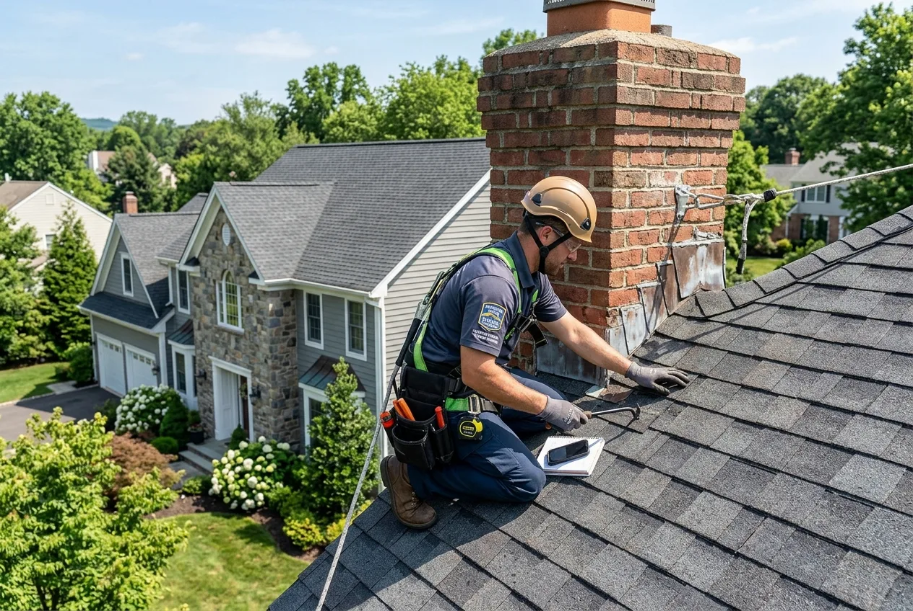

Precision Roof Repair
Fast, durable repairs for wind-damaged shingles, valley leaks, rusted flashing channels, and cracked pipe collars across Basking Ridge.
Explore Roof RepairBridgewater Roofer delivers master architectural shingle installations, historic roof preservation, leak diagnostics, and emergency repair services for homeowners throughout Basking Ridge and Bernards Township.

Whether protecting a historic village home, remediating winter ice damming, or scheduling an executive estate roof upgrade, our nearby Bridgewater crews provide thorough, transparent service.

Basking Ridge, nestled in the rolling terrain of Bernards Township, features an enviable architectural blend ranging from the historic Revolutionary-era village center to sprawling executive subdivisions developed throughout the late 20th century. High-pitched hip roofs, intersecting gables, classic cedar shakes, and multi-flue masonry chimneys require roofers who combine structural engineering precision with deep respect for historical aesthetics.
Properties throughout the 07920 ZIP code face substantial regional weather challenges. Situated in the Somerset Hills, Basking Ridge experiences colder winter lows than lower-elevation river valleys, leading to severe freeze-thaw cycles and thick ice dam formations along eaves (explore our technical guide to ice dam prevention in NJ). Furthermore, the area’s dense old-growth tree canopy creates shade corridors that harbor moss, lichen, and organic debris in critical roof valleys (learn about safe roof moss and black streak removal).
Bridgewater Roofer brings decades of central New Jersey roofing experience to Bernards Township. We install premium Class 4 impact-resistant and 130-MPH wind-rated architectural shingles (compare GAF Timberline vs. CertainTeed Landmark), replace deteriorating lead flashing with heavy-gauge copper or aluminum, and integrate heavy-duty self-adhering ice barriers that protect your home through the harshest winter nor'easters.
From precision emergency leak repairs and storm restoration to complete shingle replacements, commercial membranes, seamless gutters, skylights, and siding.
Fast, durable repairs for wind-damaged shingles, valley leaks, rusted flashing channels, and cracked pipe collars across Basking Ridge.
Explore Roof RepairFull tear-offs down to bare decking, plywood inspection, synthetic underlayments, ice barriers, and 50-year architectural shingles.
Explore Roof ReplacementSystematic moisture diagnostics using infrared tracing to isolate hidden water intrusion paths behind siding, chimneys, and rafters.
Explore Leak RepairImmediate priority dispatch to secure exposed roof decking with heavy-duty weather tarps after winter blizzards or severe storms in Basking Ridge.
Emergency Roofing ServicesCertified storm restoration, insurance claim documentation, hail impact analysis, and emergency shingle replacement throughout Basking Ridge.
Explore Storm RepairGAF Timberline HDZ and CertainTeed Landmark architectural shingles engineered for Somerset County weather swings and curb appeal.
Residential SystemsLow-slope roofing membranes, commercial leak containment, and preventative maintenance for retail, medical, and office buildings in Basking Ridge.
Commercial RoofingDetailed physical evaluations for real estate transactions, insurance underwriting certifications, and aging roof lifespan evaluations.
Schedule InspectionUltra-durable concealed-fastener standing seam metal roofing with 50+ year longevity, Class 4 hail resistance, and energy efficiency.
Explore Metal RoofingWatertight low-slope flat roofs, positive-drainage tapered ISO insulation packages, and commercial-grade parapet wall flashing for Basking Ridge.
Explore Flat RoofingHeat-welded reflective white TPO and weather-resistant vulcanized EPDM rubber membranes engineered for maximum energy savings and reliability.
Explore Single-PlyCustom on-site seamless 5" and 6" aluminum gutters, micro-mesh leaf filtration screens, and commercial 3x4 downspouts across Basking Ridge.
Explore GuttersCertified Velux® deck-mounted skylight installations, solar-powered shades, leak-free step flashing integration, and acrylic dome repairs.
Explore SkylightsJames Hardie® fiber cement and CertainTeed insulated vinyl siding, custom aluminum fascia wrap, Tyvek® barriers, and freeze-thaw defense.
Explore SidingSomerset Hills winter freezes, heavy snowdrifts, and historic architectural complexities create distinct stress points. Select any component below to view the diagnostic profile.
Colonial homes throughout Basking Ridge feature large exterior chimneys. Over decades, mortar joints crumble and old aluminum flashing pulls loose, allowing storm rain to travel down the flue framing.
Installing heavy copper or coated aluminum step flashing cut directly into chimney mortar reglets with elastomeric sealants.
Local elevation, heavy tree coverage, and distinct seasonal swings demand specialized roofing defenses throughout the year.
Saturated soils and heavy spring downpours reveal weak flashing joints around dormers, skylights, and low-pitch porch transitions.
Summer sun bakes unshaded roof planes up to 150°F, testing asphalt oils, while sudden thunderstorms bring high localized wind gusts.
Dense oak and maple foliage blankets valleys and roof dead-ends. Damp organic mats promote shingle rot and harbor destructive moss colonies.
Elevation creates colder conditions than lowlands. Snow melt refreezes at eaves, generating heavy ice dams that force water under standard shingles.
We adapt materials and installation techniques to suit every property type across the 07920 community.
Steep-gabled traditional homes requiring historical sensitivity, copper flashing accents, and premium slate-profile shingles.
Expansive 1980s and 1990s estates with multi-facet hip roofs, cathedral ceilings, dormers, and multiple valley junctions.
Townhomes and planned developments (such as Spring Ridge) with strict architectural bylaws, uniform colors, and synchronized crew staging.
Flat and low-slope single-ply membrane roofing (TPO/EPDM) for corporate centers and medical suites along Martinsville and Stonehouse Roads.
Our certified inspectors provide honest evaluations. We only recommend complete replacement when structural integrity or shingle age necessitates it.
Recommended when shingle granules are firmly intact and problems are strictly localized.
Necessary when the shingle mat has dried out or multiple structural leaks have developed.
From seamless Bernards Township permitting to thorough cleanup, our 8-step process guarantees stress-free execution.
Responsive phone intake to understand your roof concern, timeline, and property specifics.
In-depth roof surface survey, attic inspection, flashing evaluation, and photographic documentation.
Detailed written proposal with exact material options, clear milestones, and competitive pricing.
Complete permit management with Bernards Township Construction Office (1 Collyer Lane).
Shielding delicate landscaping, shrubbery, driveways, and stone patios with heavy protective tarps.
Complete tear-off, decking re-nailing, ice & water barrier installation, and manufacturer-certified shingling.
Repeated magnetic sweeps of all lawn, flowerbed, and driveway areas to capture all stray fasteners.
Comprehensive final walkthrough, quality sign-off, and delivery of registered warranty documentation.
In Basking Ridge, residential roof replacements and structural decking modifications are permitted through the Bernards Township Construction Code Official located at 1 Collyer Lane, Basking Ridge, NJ 07920. Under the New Jersey Uniform Construction Code (UCC), self-adhering ice barrier membranes must extend at least 24 inches past the interior wall line, and all installed systems must meet municipal wind-resistance mandates.
Bridgewater Roofer handles all permit submissions, plan documentation, and township inspection scheduling on your behalf, guaranteeing complete code compliance and peace of mind.
We believe in complete pricing transparency. Every proposal is calculated based on exact physical characteristics of your roof.
High square footage and steep colonial pitches (8/12 to 12/12) necessitate specialized staging, harness systems, and additional labor.
Dormers, intersecting valley junctions, masonry chimneys, and skylight curbs require detailed custom metal work and waterproofing.
From standard architectural shingles to heavy-duty designer laminate shingles (CertainTeed Landmark Pro, GAF Camelot), material choices shape longevity and cost.
Any rotted or weakened plywood decking discovered after stripping old layers must be replaced to ensure manufacturer warranty validity.
Get a precise, itemized estimate customized for your Basking Ridge home.
Call (908) 465-9944 for an EstimateLocal accountability, certified master craftsmen, and ironclad manufacturer warranties make us the preferred Somerset County roofer.
Minutes away in Bridgewater, ensuring rapid dispatch for emergency leaks and seamless project management.
Active New Jersey Home Improvement Contractor licensing and comprehensive workers' compensation and general liability coverage.
Certified installation techniques unlock complete non-prorated manufacturer warranty protection on new roofing systems.
We treat your lawn, flowerbeds, and driveways as our own, conducting multi-pass magnetic sweeps to eliminate stray nails.
Real experiences from homeowners throughout our central New Jersey service region.
"We replaced our 25-year-old colonial roof in Basking Ridge with architectural shingles. The Bridgewater Roofer crew was on time, exceedingly polite, and finished the entire job in two days with zero mess left behind. Truly first rate."
"A heavy winter snowstorm created an ice dam that leaked through our master bedroom ceiling. They responded promptly, cleared the ice dam, and later installed proper ice shield protection. Excellent service."
"Their estimate was honest, transparent, and significantly more thorough than two other contractors we consulted. The new roof looks gorgeous and survived recent high winds without a hitch."
Our crews provide prompt dispatch throughout Somerset County and neighboring Somerset Hills townships.
Central headquarters and main staging yard providing rapid dispatch for residential and commercial roofing.
Bridgewater Roofing HubDirectly south along the Watchung Mountains, featuring custom luxury estates and multi-tier architectural roofs.
View Warren ServicesNeighboring Watchung ridge community with steep hillside properties and specialized tree canopy protection.
View Martinsville ServicesDirectly west in the Somerset Hills horse country, featuring master-planned communities and historic farmsteads.
View Bedminster ServicesSomerset County seat with historic Victorians, mixed residential properties, and downtown commercial roofs.
View Somerville ServicesSuburban township south of the river corridor with active developments and wind-resistant shingle requirements.
View Hillsborough ServicesHelpful answers regarding roof repairs, permits, ice damming, and warranties in Bernards Township.
Yes. Bridgewater Roofer provides full residential and commercial roof repair services throughout Basking Ridge (ZIP 07920). We fix leaking chimneys, pipe boots, valley leaks, missing shingles, and storm damage with prompt dispatch.
Yes. A construction permit from the Bernards Township Construction Code Official (1 Collyer Lane, Basking Ridge) is required for re-roofing projects. Bridgewater Roofer prepares and files all necessary municipal paperwork and coordinates township inspections.
Due to the colder elevation of the Somerset Hills, we install self-adhering waterproof ice and water barrier membranes extending 6 feet up eaves (well beyond the 24-inch code minimum) along with balanced ridge and soffit ventilation to keep roof decks cold and prevent snowmelt runoff.
Yes. We routinely work within Basking Ridge HOA communities. We supply required architectural submittals, shingle color sample boards, and certificates of insurance to ensure all work meets neighborhood association guidelines.
Absolutely. We offer designer architectural shingles and synthetic slate profiles that replicate historic cedar shake and natural slate aesthetics while delivering modern Class A fire resistance and 130-MPH wind warranties.
Most residential roof replacements in Basking Ridge are completed within 1 to 2 business days. Our dedicated crews work efficiently while maintaining strict safety standards and property protection protocols.
We provide full manufacturer-backed lifetime warranties (including 50-year non-prorated protection on systems like GAF Timberline HDZ and CertainTeed Landmark) paired with our comprehensive contractor workmanship warranty.
We wrap home perimeters with heavy tarps and plywood shields before removing any shingles. Rubber-tired trailers are placed on protective wood blocking, and magnetic rollers are repeatedly used across all lawn and drive areas.
Professional insights on roof maintenance, ventilation, and cost factors.
Detailed breakdown of square footage, shingle types, and labor costs for central New Jersey homes.
Read Cost GuideHow adequate attic bypass sealing and eave membranes stop damaging winter ice dam formation.
Read Ice Dam GuideExplore dimensional shingle profiles that enhance curb appeal and withstand high mountain winds.
Explore Shingle ProfilesWhether you require storm hail restoration, HOA architectural shingle replacement, or attic ventilation optimization, our local team is ready to help.